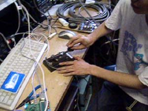
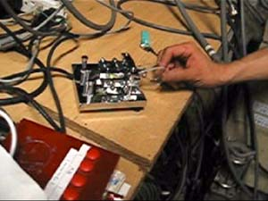
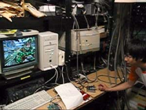

|
|
|
|
〒153-8902 東京都目黒区駒場3-8-1 東京大学学生会館310A
〒113-8654 東京都文京区本郷7-3-1 生協第二食堂3階2号室 |
||
|
the CW of the DEAD By 7L4HHE @ JA1ZLO
バカウケ必至の爆笑CW練習システム！（本家Web）
H8/3048Fマイコンを利用し、CW入力をデコードしてキーボード入力に変換するシステムを製作いたしました。これにより、あらゆるタイピング練習ソフトがCW練習ソフトに早変わり！タイピングソフトの最高峰と呼ばれる「the Typing of the DEAD」にもバッチリ対応し、このたび「the CW of the DEAD」として公の場に出ることになりました。
  
デモムービーのダウンロードはこちらから
※本システムの正式な配布/販売については、今のところ未定ですが、ハムフェアで、試験的に実費配布（数量限定）することになりました！配布予約希望など、ご連絡は、matsui@cad.t.u-tokyo.ac.jpまで。 |
|
このサイトは、東京大学アマチュア無線部が管理しています。
このサイトに関するお問い合わせは、master@ja1zlo.u-tokyo.orgへどうぞ それぞれのページに関するお問い合わせは、それぞれのページに表示されている問い合わせ先へどうぞ。 All Rights Reserved, Copyright (c) 2002-2004 The University of Tokyo Amateur Radio Club |